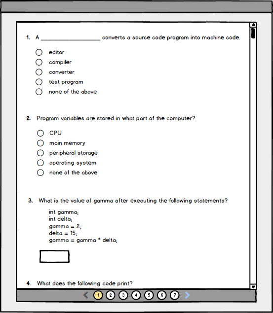
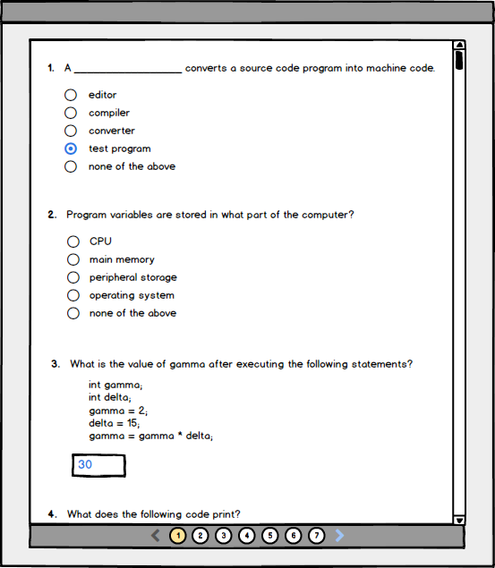

The scenario in this section illustrates a user starting a test and entering their answers to different question types on the first page of the test. This scenario continues where the previous scenario left off.
The user is ready to begin the test and clicks on the 'Begin Test' button. The system responds by starting the test's timer and displaying the first page of questions for the test.

Figure 0: First page of a test view.
The user has begun taking the test and is presented with the first page of the test, on which a number of questions are displayed. Different question types are displayed in different ways.
Question #1, a multiple choice question, displays a question prompt with a number of possible responses to the prompt below it. For this question the user clicks on the bubble next to the response they believe is the most correct.
Question #3, a short answer question, displays a question prompt with an empty text box below it. For this question the user enters their response to the question prompt into the text box.
The system responds by recording the user's answers.

Figure 1: First page of a test view with answers filled.
{kind=link}